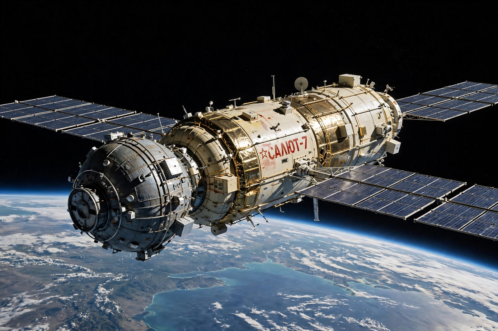

Salyut programme
From Wikipedia, the free encyclopedia
| Salyut programme | |
|---|---|
| Country | Soviet Union |
| Operator | Soviet space program |
| First launch | 19 April 1971 (Salyut 1) |
| Last launch | 1986 (Salyut 7 reentry 1991) |
| Status | Succeeded by Mir |

A Salyut station in orbit (artist's impression).The Salyut programme (Russian: Салют, meaning "salute" or "fireworks") was the first space station programme, undertaken by the Soviet Union. It involved a series of single-module stations launched between 1971 and 1982, beginning with Salyut 1, the world's first space station, and it laid the foundations for the modular Mir station and, through it, the International Space Station.
The stations served both civilian research and, in the parallel secret Almaz military series, reconnaissance purposes. Crews reached them aboard Soyuz spacecraft, and uncrewed Progress freighters later delivered supplies — a pattern of operations that became the template for all subsequent stations.
Stations
Seven Salyut stations were successfully crewed. Salyut 1 (1971) hosted the first station crew but its second crew, aboard Soyuz 11, died during reentry. Salyut 4 (1974) supported long missions, Salyut 6 (1977) added a second docking port enabling resupply and record endurance flights, and Salyut 7 (1982) was the last of the series, visited by the first woman to perform a spacewalk, Svetlana Savitskaya, in 1984.
Several launches failed or were lost, including the station destroyed in 1973 sometimes called Salyut 2 in Western sources (actually an Almaz prototype) and DOS-2 and Kosmos 557. The second-generation stations from Salyut 6 onward could be refuelled and remained occupied for most of their lives.
Records and legacy
Salyut crews progressively extended human endurance in orbit: missions aboard Salyut 6 and 7 lasted up to 237 days, experience that fed directly into the design of Mir, whose core module was itself a Salyut-derived design. The programme demonstrated rendezvous, docking, long-duration medicine and station repair — including the dramatic 1985 rescue of the frozen, unresponsive Salyut 7 by the Soyuz T-13 crew.
See also
Salyut 1 · Mir · Almaz · Soyuz 11 · Shuttle–Mir program